AE 443 · Experimental Dynamics and Control Laboratory · Spring 2026 · ERAU
Gyroscopes are at the heart of inertial navigation systems, spacecraft attitude control, and platform stabilization for cameras, antennas, and weapons systems. A spinning gyroscope resists angular displacement through gyroscopic precession — but without active feedback control, external disturbances cause the deflection angle to wander unpredictably. This lab modeled the open-loop gyroscope dynamics, designed a PI controller to regulate deflection angle, and experimentally demonstrated the dramatic difference between controlled and uncontrolled system behavior when the base is disturbed.
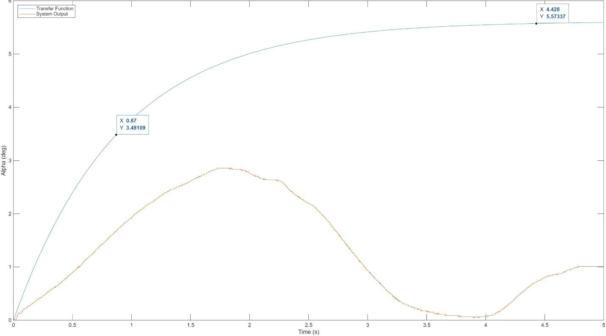
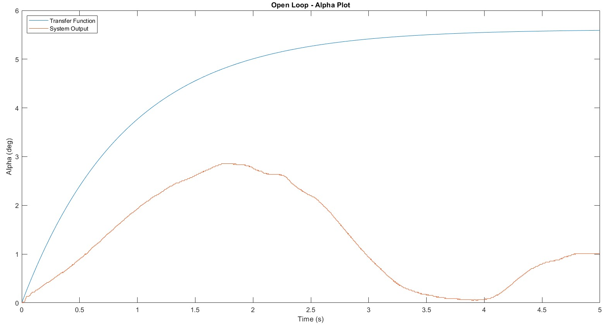
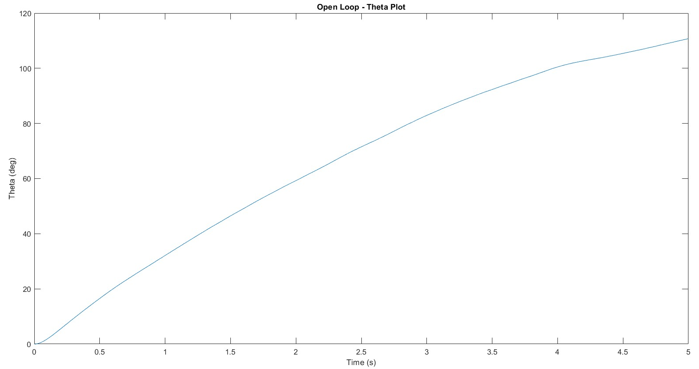
The open-loop gyroscope plant is a first-order system: α(s)/Vm(s) = (K/Gg) / (τs + 1), where K = 1.53 rad/s/V, τ = 0.9 s, and Gg = 5.20 1/(rad·s). Closing the loop with a PI controller Vm(s) = (kp + ki/s) · e(s) produced a second-order closed-loop transfer function. Matching its denominator coefficients to the standard form gave the PI gain expressions, solved with ζ = 1.05 and ωn = 3.61 rad/s:
kp = Gg(2ζωnτ − 1) / K = 19.79
ki = Ggτωn² / K = 39.86
The experimental time constant was identified from the open-loop response: τexp = 0.87 s at the 63.2% crossing, compared to the theoretical 0.9 s — close agreement despite the gyroscope’s more complex dynamics.
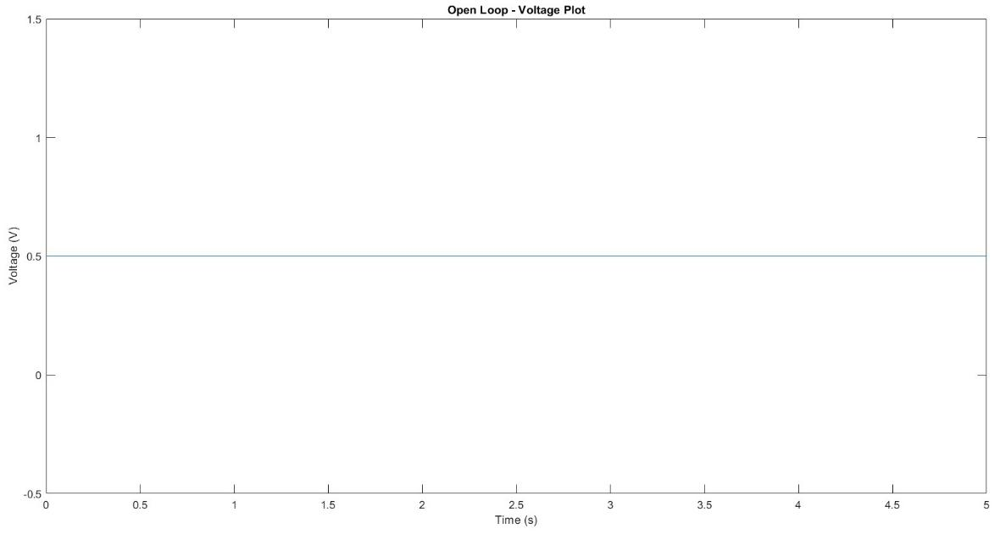
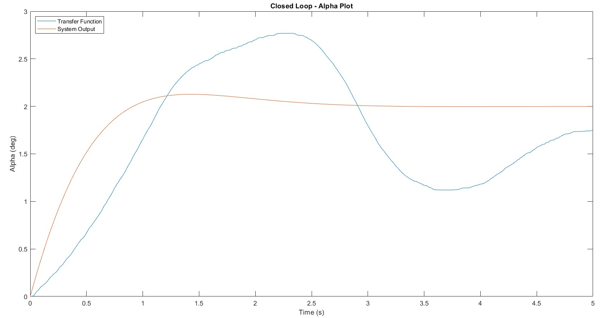
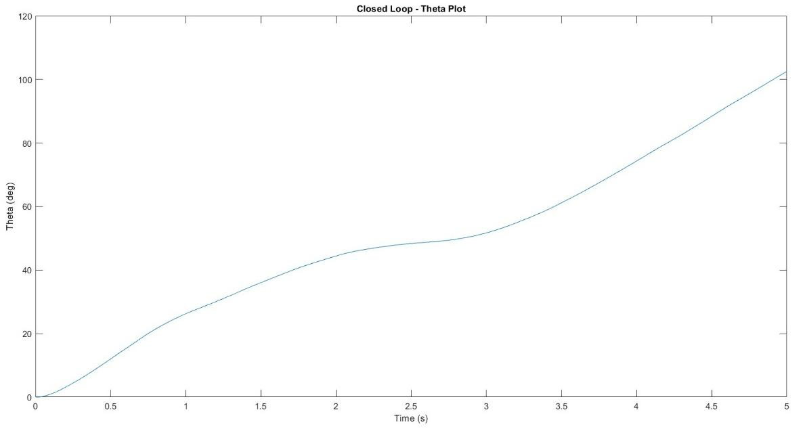
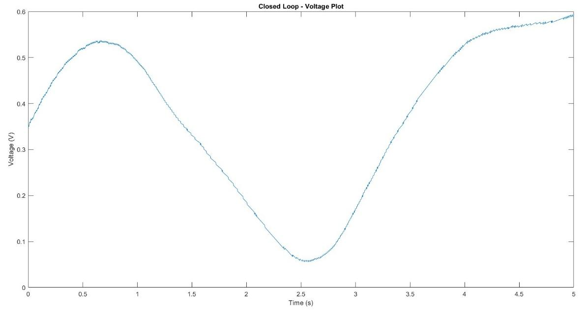
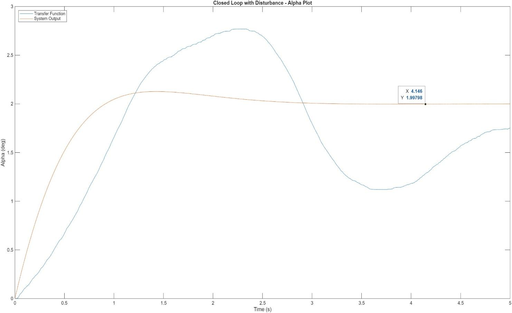
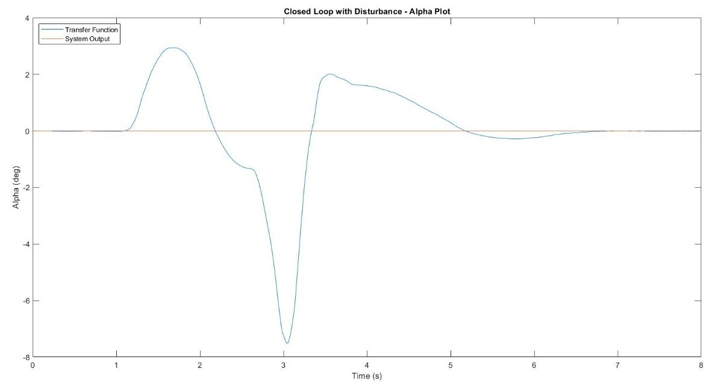
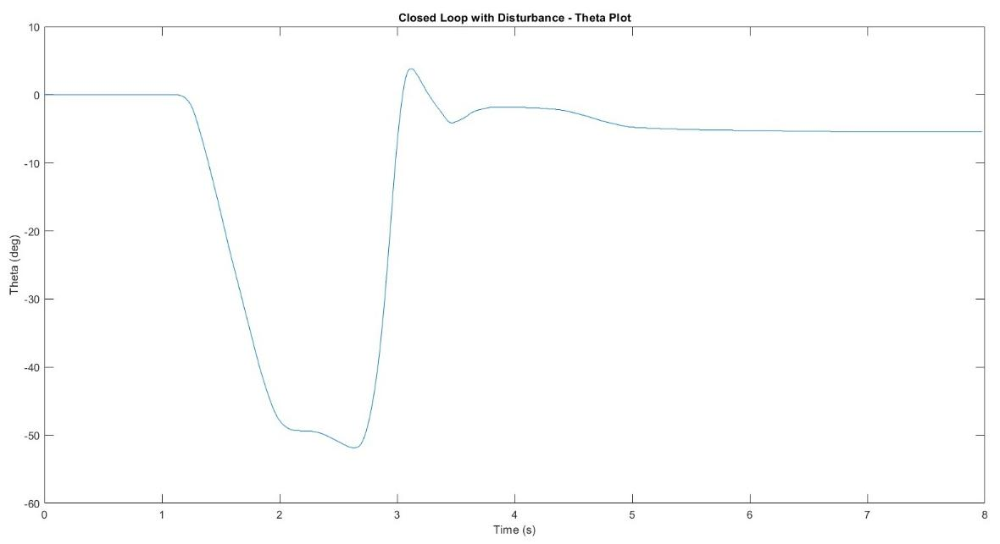
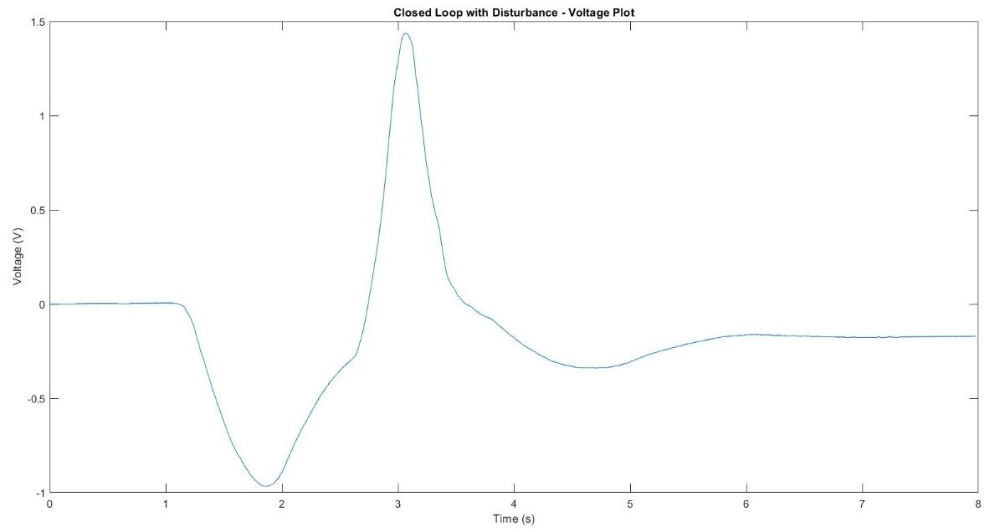
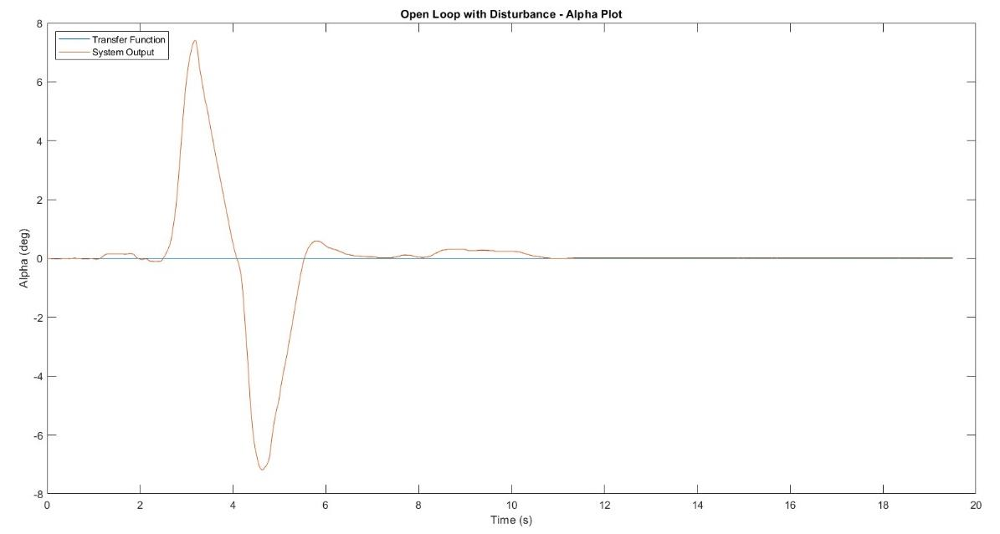
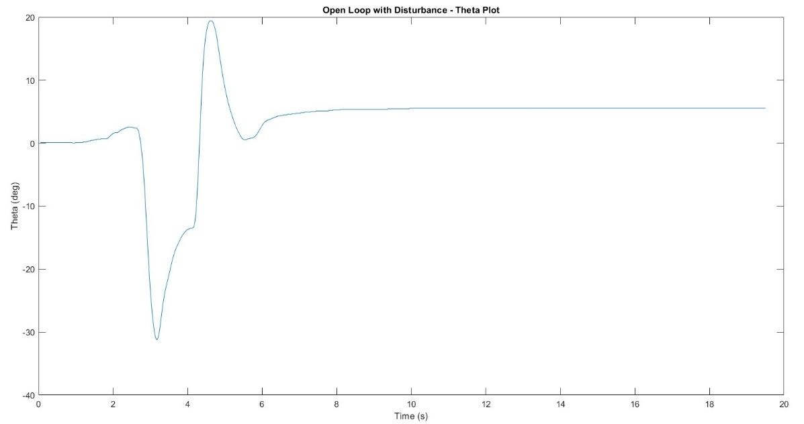
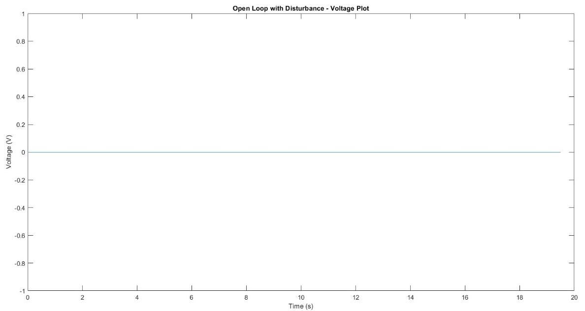
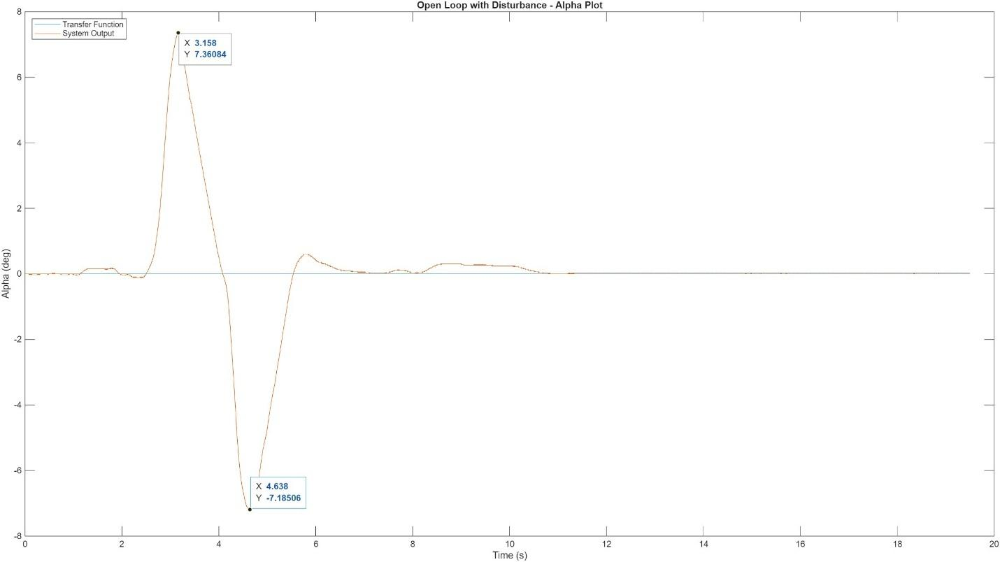